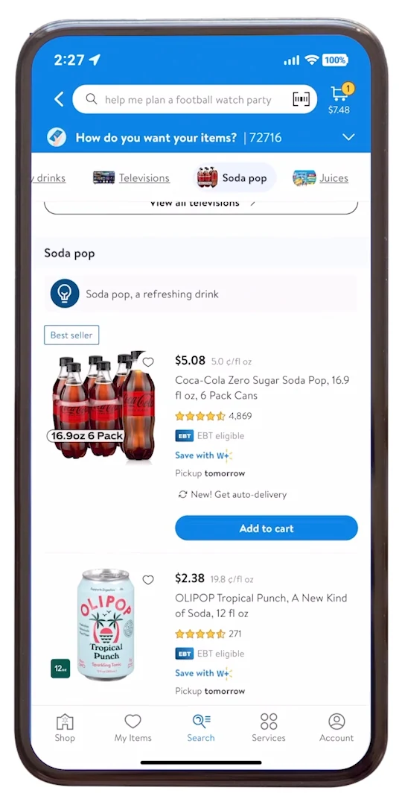
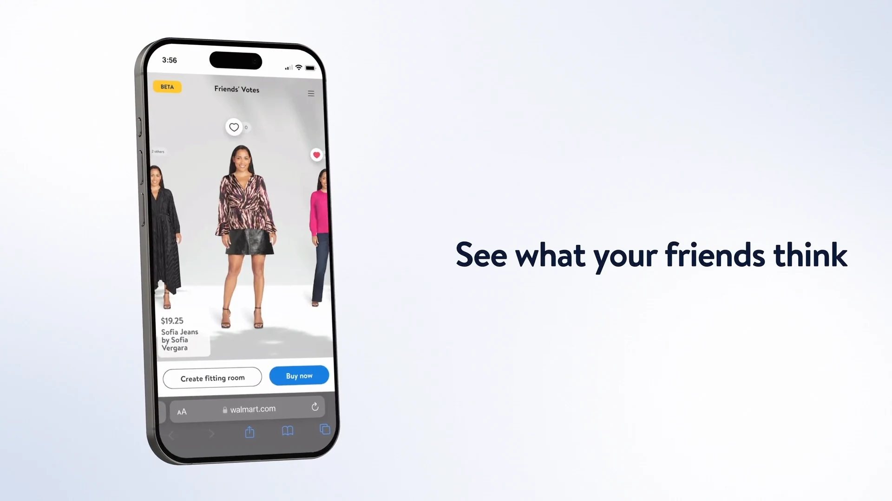
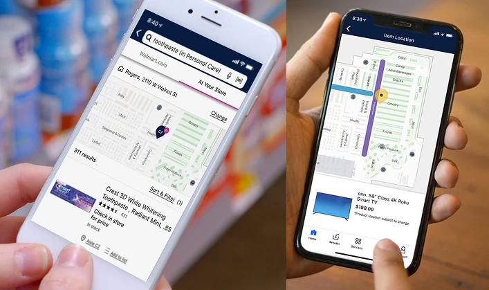
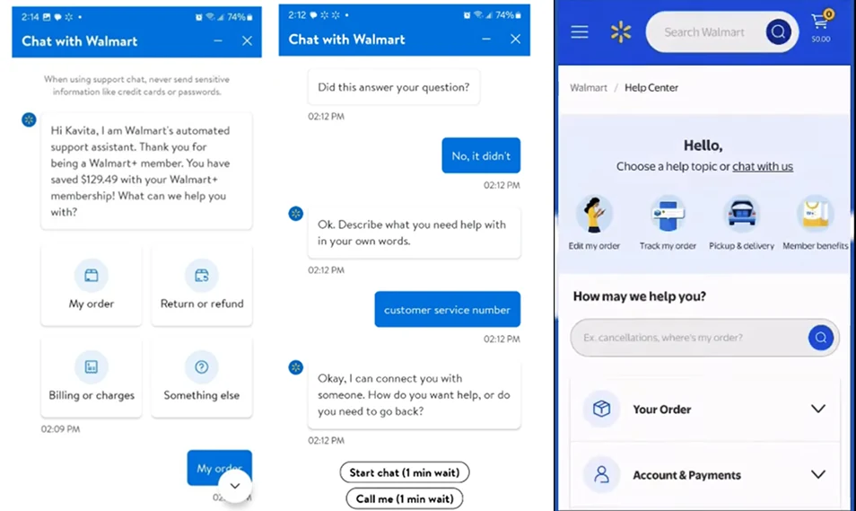

Walmart.com and apps · Walmart · Senior Manager, Design · Feb – Oct 2020Quarterly conversion lifts · three help strategies made one
online and in store, at the same time
4design leaders, one slice each
3 → 1help strategies across the apps
Preferences were shifting faster than forecasts could follow, and COVID compressed years of digital change into months. The store still mattered: customers ordered online and picked up.
I was one of four design leaders, each with a slice of the funnel. Mine ran from search to after-sales. We tested every small feature and kept improving the journey.
My slice
Search typeahead and results.
Product page bottom fold and personalisation.
Bundles and offers, end to end.
Chat, help and after-sales emails.
Search like Gen Z.A GenAI search that paired personalisation with natural language, for our youngest, most vocal shoppers.
Shop with friends.Virtual try-on with friends' opinions, for a time when people couldn't shop together.
Help where they are.A store map that knows where you're standing, and three help strategies brought into one across the apps.
The teamOne of four design leaders in the India extension of Valerie Casey's team, each owning a slice of the funnel, with product and engineering partners for every slice.
Quarterlyconversion lifts, A/B tested
3 → 1help strategies across the apps
End to endbundles and offers in the journey
Concept and shipped

Search like Gen Z

Shop with friends

Store map - images are representative

Help, unified
What it became
Personalisation got faster and found better places to show up, tied to offers and to Walmart+ loyalty.